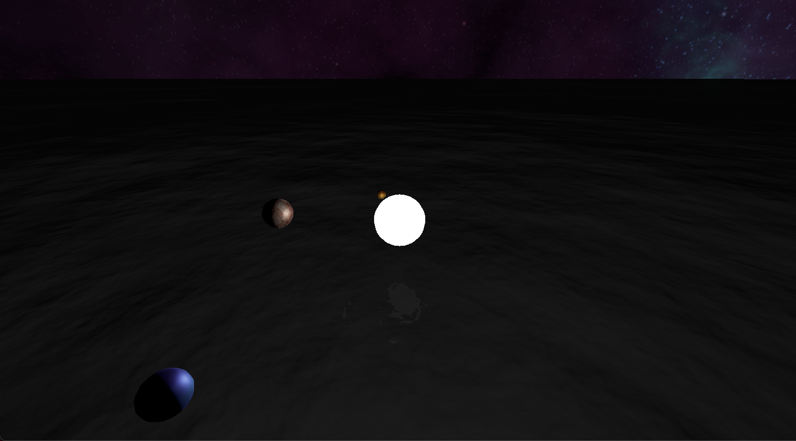

CSE 160 Program 5
Autumn Moulios (amoulios)
Ethan Nguyen (etqnguye)
Driver Page

Eclipse:
Our project features a set of circular planets orbiting around a single light source above an infinite ocean.
This is to highlight our work with texturing and shadows (Every so often planets will cause an Eclipse on another planet)
Features Added:
Sphere and Plane Objects
Object Movement
Point Lighting
Camera Orbit Controls
Texturing
- Shaded Textures too!
Skybox
Shadows
Animated Water
- with Reflections
Sphere and Plane Objects:
We created these using the three.js standard mesh. The spheres have 15 cross sections in each direction.
Object Movement:
We used trig functions to map the planets' positions to a circular orbit around the light source.
Point Lighting:
Our "Sun" is a single point light represented by a bright white sphere. It's light falloff is really small so that it lights up far away objects and our project looks more like a solar system.
Camera Orbit Controls:
By default, our camera looks at the sun and can be controlled using the left mouse button to orbit, right mouse button to move left/right, and scroll wheel to move forward/back
Texturing:
We load textures using the built in texture loader from three.js, and applied a map to allow lighting to affect the textures. This can be seen on the planets, which are constantly rotating.
Skybox:
Once we figured out textures, we created a skybox using a giant cube (20,000 x 20,000 x 20,000) with the textures on the inside.
Shadows:
Shadows are built into the three.js lighting system, and we decided to showcase them by using a solar system.
Animated Water:
The water is a giant plane with a texture that changes as the Water Object's time value is increased. Three.js handles all of the nitty gritty lighting details. We used the water texture included in three.js examples.
Link to Video
Code Reference for Water and Skybox:
WebGL Shaders Ocean
Code Reference for Lighting and Textures:
WebGL Lights Physical
Skybox Texture:
Ulukai's Space Skyboxes
Planet Textures:
Planet 1
Planet 2
Planet 3